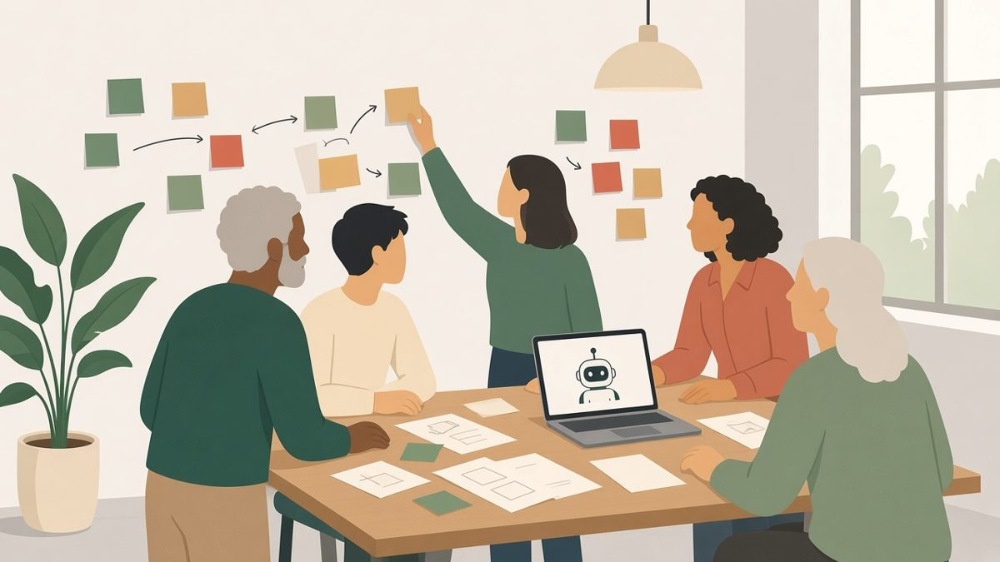
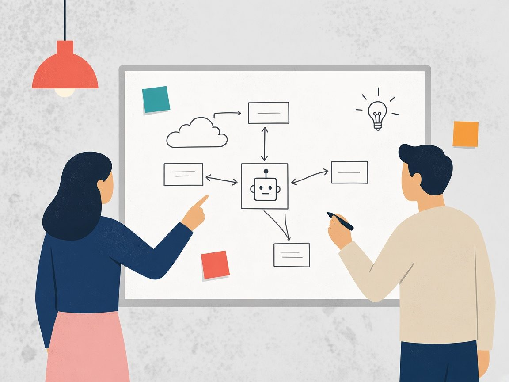
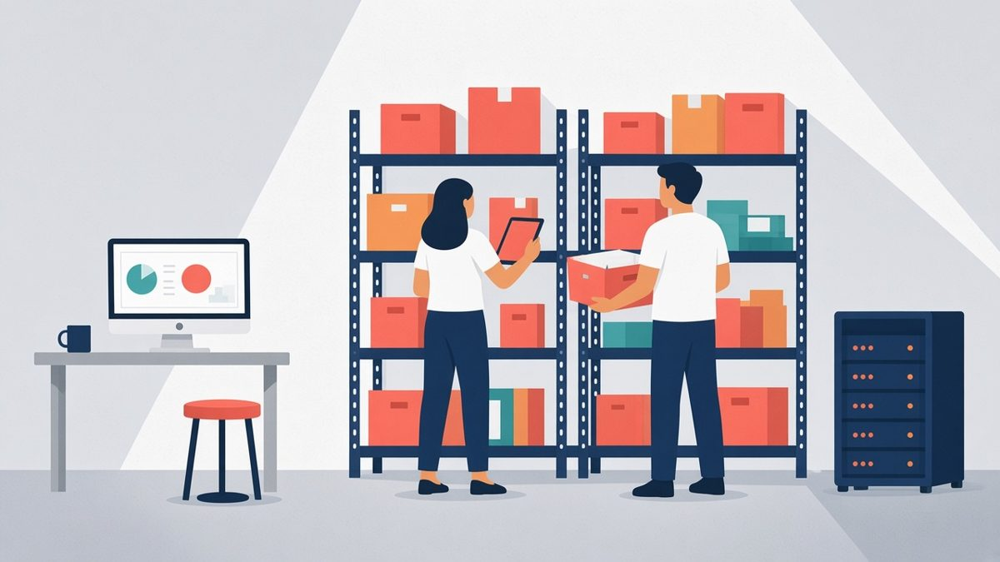
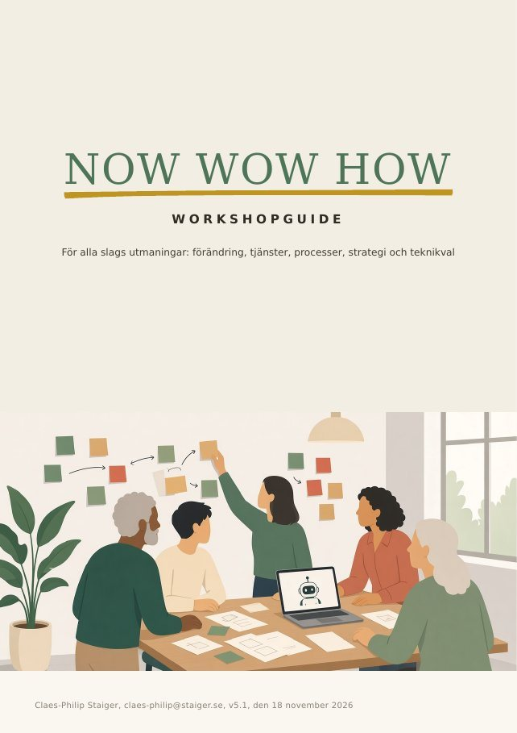

Now Wow How
En workshopmetod i tre delar: nuläge, vision och handling. Den samlar en grupp kring ett gemensamt mål och en plan för att nå dit, oavsett om utmaningen är en förändring, en ny tjänst, en process, en strategi eller ett teknikval.
Ladda ner workshopguiden (pdf)
Tre delar, i den här ordningen
Först förstå, sedan drömma, sist bestämma. Varje del börjar med att alla tänker själva, fortsätter i grupp och avslutas med att grupperna presenterar för varandra.
Gruppen delar sin bild av nuläget: vad som fungerar och kan byggas vidare på, och var tid, pengar och kvalitet går förlorad.
Gruppen formar en vision med frågor som börjar med ”Tänk om…”, och beskriver effekterna, inte vad som ska byggas eller köpas.
Gruppen tar fram idéer, väljer de mest lovande och bestämmer nästa steg, med ansvar och tidplan.
När metoden passar
Sätta en vision eller ett mål
- Ni saknar en gemensam bild av behov och utmaningar
- Ni saknar en gemensam bild av mål och förväntat resultat
Fatta beslut
- Utmaningarna känns för stora eller för otydliga
- Möjligheterna känns oändliga och inget blir av
Engagera dem som berörs
- Perspektiven från dem som påverkas saknas
- Förändringen riskerar att mötas av motstånd
Starta eller styra om ett arbete
- Samma arbete görs på olika sätt på olika ställen
- Ni behöver en gemensam process innan krav, upphandling eller teknikval


Så går varje del till
- Tänk själv 5 till 10 minuter
En tanke per lapp. Att börja enskilt minskar grupptänkande och ger fler perspektiv. - Tänk tillsammans 15 till 20 minuter
Lapparna delas, grupperas och sammanfattas på blädderblock. - Presentera och reflektera 15 till 20 minuter
Varje grupp presenterar det viktigaste. De andra ger återkoppling och ställer frågor.
Gäller det en process: rita flödet steg för steg på väggen och sätt varje utmaning på det steg där den uppstår. AI kan vara ett stöd före, under och efter workshopen, men det är gruppen som tänker och beslutar.
Spelregler i rummet
- Spela spelet. Ingen har det rätta svaret, så alla behöver bidra.
- Håll dig till ämnet. Viktiga sidospår hamnar på parkeringen och tas om hand senare.
- Skjut upp omdömet. Mängd före kvalitet. Värderingen kommer sen.
- Använd mångfalden. Vi söker inte enighet, vi söker djupare förståelse.

Workshopguiden
Hela metoden med upplägg, tider, frågor, idémall och tips för den som leder workshopen. 16 sidor i A5 som uppslag, version 5.1.
Ladda ner pdf (1,2 MB)